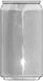
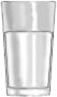
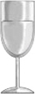
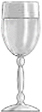
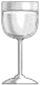
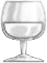
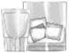

Early Remission: When diagnostic criteria was met within the past 12 months, but not for the past 3 months
Sustained Remission: No criteria met for diagnosis in the past 12 months or longer
| 12 oz beer | 8-9 oz malt liquor | 5 oz wine | 3-4 oz fortified wine (such as sherry or port) | 2-3 oz of cordial, liquer, or apertif | 1.5 oz of brandy (a single jigger) | 1.5 oz of spirits (a single jigger of 80-proof gin, vodka, whiskey, etc) |
 |
 |
 |
 |
 |
 |
 |
| ~5% alcohol | ~7% alcohol | ~12% alcohol | ~17% alcohol | ~24% alcohol | ~40% alcohol | ~40% alcohol |
| Beverage | Amount | Standard drinks |
|---|---|---|
| Beer | 12 oz | 1 |
| 16 oz | 1.3 | |
| 22 oz | 2 | |
| 40 oz | 3.3 | |
| Malt liquor | 12 oz | 1.5 |
| 16 oz | 2 | |
| 22 oz | 2.5 | |
| 40 oz | 4.5 | |
| Table wine | Standard bottle | 5 |
| 80-proof spirits | 1 pint | 11 |
| One fifth | 17 | |
| 1.75 L (59 oz) | 39 |
| Medication | Best use | Advantages | Disadvantages / avoid |
|---|---|---|---|
| Naltrexone 50 mg daily |
Usually first-line. Best for reducing heavy drinking, craving, or relapse. |
|
|
| Acamprosate 666 mg three times daily |
Maintaining abstinence after withdrawal. Preferred when significant liver disease precludes naltrexone. |
|
|
| Topiramate Titrate gradually |
Off-label alternative when naltrexone is unsuitable. Attractive with obesity, migraines, or seizures. |
|
|
| Disulfiram 250 mg daily |
Selected, highly motivated patient committed to abstinence. Most useful when dosing is supervised. |
|
|
Option 1
Option 2